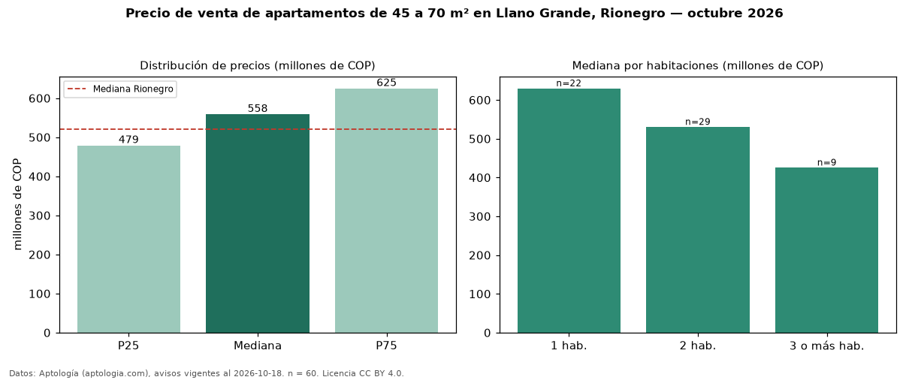

Precio de venta de apartamentos de 45 a 70 m² en Llano Grande, Rionegro — octubre 2026
COP 558 millones es el precio mediano de apartamentos de 45 a 70 m² en venta en Llano Grande, Rionegro (n = 60 avisos). Eso es 20 % menos que la mediana de todos los apartamentos en venta de Llano Grande (COP 700 millones, n = 179); este segmento reúne el 34 % de esos avisos. Por metro cuadrado, la mediana es COP 8,62 millones/m² (n = 60), 9 % por debajo del conjunto de referencia (COP 9,50 millones/m²). El área mediana anunciada es 60 m². El segmento con más oferta es el de 2 habitaciones (29 avisos, mediana COP 530 millones); pasar de 1 habitación a 3 o más habitaciones cambia la mediana −32 %. La administración mediana declarada es COP 380.000 al mes (n = 37). El estrato más frecuente es 5 (39 % de los avisos con estrato). La mediana de todos los apartamentos en venta de Rionegro es COP 520 millones (+7 % de diferencia). Datos: Aptología (aptologia.com), CC BY 4.0 — https://www.aptologia.com/venta/rionegro/llano-grande. Archivos: PDF, CSV con las cifras y gráfica PNG.

| Avisos únicos | 60 |
|---|---|
| Percentil 25 | COP 478.750.000 |
| Mediana | COP 558.500.000 |
| Percentil 75 | COP 624.750.000 |
| Mediana por m² | COP 8.619.402 |
Fuente: avisos vigentes de portales inmobiliarios recopilados por Aptología, deduplicados (mínimo 30 avisos únicos por celda). Precios pedidos, no cerrados. Fecha: 2026-10-18.